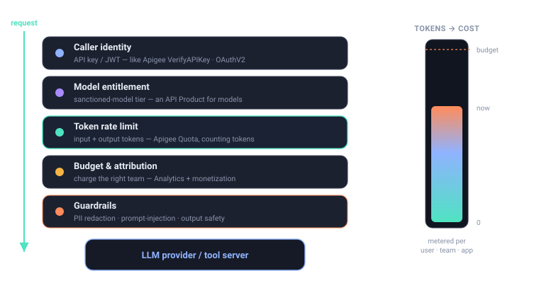

5.5 — Agent identity & guardrails for autonomous workflows
Bottom line
An autonomous agent is a consumer, and a consumer needs a leash: a stable identity that follows it through every model and tool call, plus the governance that identity unlocks — entitlement (5.4), token budgets (3.1–3.2), guardrails (4.x), and a step-cap. By the end you can attach a per-agent token budget and prove a runaway agent loop is cut off with 429 when it exhausts that budget — the safety rail that makes autonomy operable.
In plain words
Some robot-helpers are busy little workers that keep doing tasks on their own, over and over. So you give each one its own name tag and its own small jar of pocket money. If a robot gets stuck running in circles — asking the same thing again and again — it runs out of pocket money and has to stop, before it spends everything in the house. Giving each busy robot its own name tag and spending limit is agent identity and budgets.
Why this exists
Everything in Parts 3–5 governs a call. An autonomous agent is not one call — it's a loop: think, call a model, call a tool, observe, repeat, possibly for dozens of steps with no human between iterations. The danger isn't a single bad request; it's the loop that calls a model 400 times, or recurses on a tool forever, racking up cost and side effects no per-call check would catch.
That risk only becomes governable once the agent has a first-class identity — not the end-user it's acting for, but the agent itself — that the gateway can attribute spend to, scope tools for, and rate-limit as a unit. With that identity in place, the controls you already built compose into a leash: the 5.4 OAuth/CEL rules say which tools this agent may touch, the 3.x token budget caps how much it may spend per session, the 4.x guardrails filter what flows in and out, and a max-steps guard bounds how long it may run. This session ties those threads into one: identity in, budget + guardrails + step-cap around the loop.
The concept
The agent's identity threads through the whole governance stack — every model and tool call in its loop is attributed, entitled, metered, and guarded under that one identity:

The mechanism reuses pieces you already have. The agent presents a token whose subject (or a custom agent_id claim) is the agent's identity — the same JWT machinery as 5.4, just keyed on the agent rather than a human. That identity becomes the rate-limit key for a per-agent token budget (the 3.1 BackendTrafficPolicy pattern), so the agent's cumulative token use across all the model and tool calls in a session decrements one shared counter. Exhaust it and the gateway returns 429 — the loop stalls instead of running up unbounded cost. Guardrails and the 5.4 tool authz attach to the same identity, so the leash is coherent: who, what, how much, how long.
Watch out
An agent with no per-session budget and no step-cap can loop indefinitely — re-querying a model, re-calling a tool, recursing on its own output — and run up unbounded cost and side effects before anyone notices. Identity plus a token budget plus a max-steps guard is the leash; any one alone leaves a gap. A budget without a step-cap still allows thousands of tiny cheap calls; a step-cap without a budget still allows a few huge expensive ones.
From Apigee
Treat the agent as a developer app, exactly like a registered client in Apigee. It gets a client_id-equivalent identity, an API Product-style entitlement (the 5.4 tool scopes), a Quota (its token budget), and Analytics attribution — the agent shows up in your reports as a first-class consumer, and you can revoke, throttle, or audit it like any app. The new twist is that this "app" acts autonomously in a loop, so the Quota isn't protecting a backend from external callers — it's protecting you from your own agent.
From Java microservices
You already propagate a security and trace context across a call chain — a JWT and a trace ID flowing from service to service so identity and causality survive the hops. An agent loop is that chain, except the "caller" is autonomous: it decides the next hop itself, with no human or upstream service gating it. So you propagate the agent's identity the same way, but the gateway also has to bound the chain — a budget and step-cap acting like a circuit breaker on a call graph the agent is free to grow on its own.
Where the analogy breaks
A developer app and a service chain are both ultimately driven by something deterministic — a request arrives, work happens, it ends. An autonomous agent generates its own next step from a model's output, so the loop has no externally fixed bound; left alone it doesn't naturally terminate. Neither Apigee's per-request Quota nor a Spring circuit breaker was designed for a caller that invents its own traffic. The budget and step-cap aren't optimizations here — they're the only thing guaranteeing the loop halts.
Hands-on lab
Lab — leash a runaway agent with a per-agent token budget
Prereqs: the gateway from 1.5 with an AIGatewayRoute and the secured MCPRoute from 5.4 (export $NAMESPACE and $GATEWAY_HOST), kubectl, and an agent that authenticates with a JWT carrying an agent_id claim (or use a header x-agent-id for the lab). Reuse the token-metering setup from 3.1.
1. Attach a per-agent token budget with a BackendTrafficPolicy keyed on the agent identity, charging the model-reported tokens (the 3.1 pattern, keyed on the agent rather than a user):
apiVersion: gateway.envoyproxy.io/v1alpha1
kind: BackendTrafficPolicy
metadata:
name: agent-budget
namespace: ${NAMESPACE}
spec:
targetRefs:
- group: gateway.networking.k8s.io
kind: HTTPRoute
name: ai-gateway-route # the model route from 1.5
rateLimit:
type: Global
global:
rules:
- clientSelectors:
- headers:
- name: x-agent-id # the agent's identity, not the end user
type: Distinct
limit:
requests: 50000 # 50k tokens per agent...
unit: Hour # ...per hour — the whole loop's budget
cost:
request:
number: 0
response:
from: Metadata
metadata:
namespace: io.envoy.ai_gateway
key: llm_total_token
2. Apply it and confirm acceptance:
kubectl apply -f agent-budget.yaml
kubectl get backendtrafficpolicy agent-budget -n "$NAMESPACE" \
-o jsonpath='{.status.conditions[0].type}{"\n"}'
3. Simulate a runaway loop — fire the agent's model calls repeatedly under one x-agent-id, as an unsupervised loop would, and watch the budget deplete:
for i in $(seq 1 60); do
curl -s -o /dev/null -w "step $i -> HTTP %{http_code}\n" \
"https://$GATEWAY_HOST/v1/chat/completions" \
-H "x-agent-id: research-agent-7" -H "content-type: application/json" \
-d '{"model":"gpt-4o-mini","max_tokens":1024,
"messages":[{"role":"user","content":"Keep reasoning and call more tools."}]}'
done
Watch out
The budget governs the next step, not the in-flight one (the 3.1 overshoot — a token limit only knows true cost after the response). For an autonomous loop that's fine if you also set a per-call max_tokens ceiling, so one runaway step can't blow the entire session budget before the 429 lands. Budget plus max_tokens plus a step-cap together — not any one alone.
4. Confirm the leash holds: once research-agent-7 crosses 50k tokens for the hour, the loop's calls flip to 429. A different x-agent-id is unaffected — each agent is budgeted as its own consumer.
What success looks like: the first steps return 200; once the agent's cumulative tokens cross 50k, every further step returns 429 Too Many Requests, halting the loop instead of letting it spend without bound. The budget is attributed to the agent's identity (not the end user), so one misbehaving agent is throttled while others run — autonomy with a working safety rail.
Verify it
Common failure modes
- No per-agent identity. If the budget keys on the end-user instead of the agent, two agents acting for one user share a counter, and you can't throttle or attribute a single runaway agent. Key on the agent identity.
- Budget without a step-cap. Token limits stop expensive loops; a loop of many tiny cheap calls can still spin near-free. Pair the budget with a max-steps guard in the agent runtime (or a request-count limit) so an infinite cheap loop also halts.
- No
max_tokensceiling. Without a per-call cap, one step can overshoot the whole session budget before the counter catches up — the 3.1 overshoot, amplified by autonomy. - Identity not propagated across hops. If the agent's identity is dropped between the model call and the tool call, the 5.4 tool rules and the budget see different (or anonymous) callers, and the leash has gaps. Propagate the same identity end to end.
- Guardrails skipped on agent I/O. An autonomous agent reading tool output back into prompts is a prime injection path; the 4.x guardrails must apply to the loop's traffic, not just human-initiated calls.
Stretch goal
Layer all three rails on one agent: the 5.4 OAuth/CEL tool entitlement, this per-agent token budget, and a max-steps guard, then deliberately make the agent loop. Confirm it's stopped by whichever rail trips first — denied a tool it lacks scope for, cut off at the token budget, or halted at the step-cap — and that each event is attributable to the agent's identity in your telemetry. That layered, identity-keyed containment is what makes shipping an autonomous agent defensible.
Recap & next
You can now treat an autonomous agent as a first-class consumer: give it a stable identity, propagate that identity across its model and tool calls, and wrap its loop in the governance that identity unlocks — 5.4 tool entitlement, a per-agent token budget that returns 429 on exhaustion, 4.x guardrails, and a step-cap. Identity plus budget plus a max-steps guard is the leash that makes autonomy operable rather than reckless.
Next — 6.1: see all of this. You'll add observability for AI traffic — tokens, latency, and tracing across the model-and-tool loop — so the agents, budgets, and tool calls you've governed become measurable, and you can finally answer "what did this agent actually do, and what did it cost?"